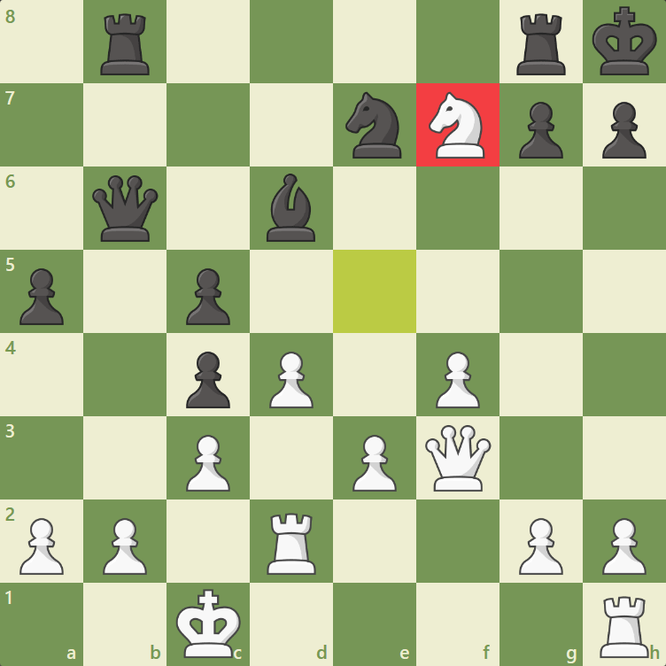

The Knight
The knight is the trickiest piece in chess! It moves very differently than other
pieces and can deliver the dreaded fork or even a smothered mate!
The knight is unique for two major reasons: 1) it is the only piece that can hop or
jump over another piece, and 2) every time it moves it alternates from a light-square
to a dark-square, or vice-versa.
The knight is considered a minor piece (like a bishop) and is worth three points. It is
considerably more valuable than a pawn (which is worth one point), equally valuable as a
bishop (also three points), but less valuable than a rook (five points) and a queen (nine points).
How the Knight moves:
The knight moves multiple squares each move. It either moves up or down one square vertically and over two squares horizontally OR up or down two squares vertically and over one square horizontally. This movement can be remembered as an "L-shape" because it looks like a capital "L".

Another unique aspect of the knight is that it always alternates between the two colors. If a knight
starts on a light-square and makes a legal move, it always ends on a dark-square. If a knight starts
on a dark-square, it always ends on a light-square. This is the opposite of a bishop, which is confined
to one square color for the entire game.
In the diagram below you can see all of the potential knight moves. Note that the knight is on a light-square,
so every legal move results in landing on a dark-square.

Unlike any other piece, the knight can hop over other pieces. In the diagram below, White's knight on the b1-square can jump over the pawns on the second rank and move to the squares a3 or c3. If it were any other piece, it would be unable to move at all, as it would be blocked on all sides.

Always remember that a knight captures a piece only if it lands on the occupied square, not if it jumps over it! Another cool thing about knights? They can deliver devastating forks and smothered mates!
Forks And Smothered Mates
A fork is when two or more pieces are attacked simultaneously. Even though this can be achieved by other
pieces, the knight is the best-suited piece for this type of attack because it can attack multiple pieces
that are more valuable than itself in a single move.
In the position below, Nxd7 was just played by White—notice how the black queen and both rooks are all
attacked simultaneously? That's a great fork!
An advanced technique that only a knight can perform is called a smothered mate. A smothered mate is the name for a checkmate that occurs when a king is surrounded by their own pieces and cannot move out of check. Here is an example of a smothered mate. Note how Black's king is surrounded by its own pieces after Nf7#!
